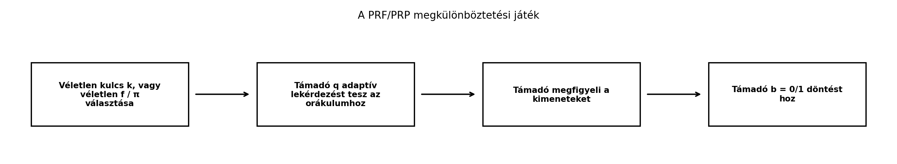

Az előző alfejezetben láttuk, hogy a pszeudovéletlen generátor (PRG) rövid, véletlen magból készít hosszú, véletlennek tűnő bitsorozatot. A szimmetrikus kriptográfia gyakorlatában azonban ennél többre van szükség: a kulcsos függvény legyen olyan, mintha a támadó egy véletlen függvényt hívna, amelyet semmilyen hatékony módon nem tud megkülönböztetni egy valódi véletlen függvénytől. Erre épül a folyamrejtjel, a blokkrejtjel, a MAC, a kulcsszármaztatás és számos más primitív.
A valós blokkrejtjelek (például az AES) invertálható leképezések, tehát permutációk, nem pedig általános függvények. A kérdés: hogyan hasonlítható össze egy permutáció és egy függvény biztonsága? A switching-lemma erre ad mennyiségi választ: ha a támadó nem túl sok lekérdezést tesz, akkor egy véletlen permutáció gyakorlatilag megkülönböztethetetlen egy véletlen függvénytől. Ez teszi lehetővé, hogy az AES-t például CTR módban, ahol a bemenetek szabadon választhatók, PRF-ként is használjuk.
A Luby–Rackoff-tétel pedig megmutatja, hogyan lehet véletlen függvényekből biztonságos permutációt építeni a Feistel-hálózattal: három kör elegendő ahhoz, hogy a bites hálózat pszeudovéletlen permutáció legyen, négy kör pedig erős PRP-t ad. Ezt az elméleti alapot használja a gyakorlatban a formatartó titkosítás (FF1) is.
A támadó egy fekete dobozhoz fér hozzá, amely kétféle lehet: az egyikben egy kulcsos függvény, a másikban egy valódi véletlen függvény fut. A támadó tetszőleges bemeneteket adhat, és megfigyeli a kimeneteket. Ha a kulcsos függvény „jó”, akkor semmilyen adaptív stratégia nem ad érdemleges előnyt a tippelésben.

A játék lényege, hogy a támadó nem látja, melyik világban van. A cél: minél kisebb legyen a valószínűségek különbsége.
Legyenek a paraméterek: a kulcshossz bitben, a blokkhossz bitben; a biztonsági paraméter . (Az előző alfejezetben a kulcshosszt jelölte; itt a blokkhossz.) Az alábbi definíciók az aszimptotikus keretet használják, de a gyakorlatban konkrét -re és -ra értjük őket.
Definíció. (Pszeudovéletlen függvény, PRF) Legyen
hatékonyan számítható kulcsos függvény. Minden kulcsra jelölje a függvényt. Azt mondjuk, hogy pszeudovéletlen függvény (PRF), ha minden valós, polinomiális erőforrású támadóra az
előny elhanyagolható a biztonsági paraméterben. Itt jelöli az összes függvény halmazát, és a választás egyenletes eloszlással történik. A támadó adaptívan kérdezhet: minden lekérdezés után látja a választ, és ez alapján választja a következő bemenetet.
Definíció. (Pszeudovéletlen permutáció, PRP) Legyen
kulcsos függvény, amelyre minden kulcs esetén permutáció -en, és az inverz hatékonyan számítható. pszeudovéletlen permutáció (PRP), ha minden valós, polinomiális erőforrású támadóra
elhanyagolható. Itt az összes permutációk halmaza, és a választás egyenletes.
Definíció. (Erős PRP) Ha a támadó mindkét irányú orákulumhoz hozzáfér – azaz -hoz és -hez, illetve -hez és -hez –, akkor erős PRP-ről beszélünk. Az előny jelölése:
Megjegyzés. A PRP valójában a PRF egy speciális esete, hiszen minden egy függvény is. A különbség a mintavételezési térben van: PRF-nél a valódi világban -ből választunk, PRP-nél -ből. A switching-lemma e két eloszlást hozza kapcsolatba.
A következő eredmény a gyakorlatban központi szerepet játszik. Azt mondja ki, hogy ha a támadó nem tesz túl sok lekérdezést, akkor a véletlen permutáció és a véletlen függvény eloszlása statisztikailag közeli.
Tétel. (PRP/PRF switching-lemma) Legyen olyan támadó, amely legfeljebb adaptív lekérdezést tesz. Ekkor
Bizonyítás. A bizonyítási terv a következő: a véletlen függvényt „megjavítjuk” úgy, hogy injektív legyen a lekérdezésen, ami pontosan a véletlen permutáció eloszlását adja. A különbség csak akkor jelentkezik, ha a véletlen függvény ütközést produkál; ennek valószínűségét a születésnapi paradoxonhoz hasonlóan becsüljük.
Definiáljunk két világot:
Feltesszük, hogy nem kérdez kétszer ugyanarra a bemenetre (az ismétlődő kérdés nem ad új információt). A véletlen függvény az -edik új kérdésre egyenletes értéket ad; a véletlen permutáció egyenletes értéket ad a még nem használt kimenetek közül. Amíg a véletlen függvény kimenetei között nincs ütközés, a két világ válaszainak eloszlása azonos: az első különböző kimenetű válaszsorozat mindkét világban egyenletes az ütközésmentes sorozatok között. Ezért a két világ döntései legfeljebb annyiban különbözhetnek, amennyi az ütközés valószínűsége a véletlen függvény világában (különbség-lemma):
Az -edik új kimenet legfeljebb eséllyel esik egy korábbi kimenetre, ezért az uniós korláttal
Ezzel a bizonyítás kész:
∎
Következmény. Ha , akkor a különbség kicsi. Például esetén lekérdezésre a korlát kisebb, mint , ami gyakorlatilag elhanyagolható. Ezért egy 128 bites blokkrejtjel, amely jó PRP, egyúttal jó PRF is, feltéve, hogy a lekérdezések száma messze alatt marad.
Továbbvitt eredmény. A switching-lemmát közvetlenül használjuk az Konkrét biztonság és üzemmódok biztonsági korlátai alfejezetben, amikor a CTR mód biztonságát a blokkrejtjel PRP-biztonságából vezetjük le, és a születésnapi korlátot alakban kimondjuk.
A Feistel-hálózatról már láttuk, hogy a körfüggvénynek nem kell invertálhatónak lennie, és a hálózat mindig invertálható. A kérdés: milyen körszám mellett válik a bites Feistel-hálózat pszeudovéletlen permutációvá, ha a körfüggvények maguk véletlen függvények?
Tétel. (Luby–Rackoff, 1988; kimondás) Legyen blokkhossz, és tekintsük a körű Feistel-hálózatot, amely bites bemeneten dolgozik, körfüggvényei pedig valódi véletlen függvények. Ekkor a hálózat által meghatározott bites permutáció pszeudovéletlen permutáció a -hez viszonyítva: bármely lekérdezéses támadó előnye legfeljebb .
Megjegyzés. A körű Feistel-hálózat erős PRP-t ad, azaz akkor is biztonságos, ha a támadó az inverz orákulumhoz is hozzáfér. A körű hálózat nem biztonságos: a következő példában mutatunk egy egyszerű megkülönböztetőt.
A Luby–Rackoff-tétel teljes bizonyítását ebben a könyvben nem közöljük, mert az meghaladja a jelen kereteket. A tétel azonban fontos tervezési alapelvet ad: ha a körfüggvények „elég véletlenek”, akkor a Feistel-szerkezet maga is véletlennek tűnik. A gyakorlatban a körfüggvényeket PRF-ből (például AES-ből) építjük, és a biztonság a PRF-biztonságra redukálódik.
Támadás. Tekintsünk egy körű Feistel-hálózatot bites bemenettel, körfüggvényei , amelyek tetszőlegesek, akár véletlenek is. A támadó a következő két bemenetet kérdezi le:
A kétkörös Feistel kimenetei:
és
A bal oldali kimenetekre:
Ez a reláció determinisztikusan teljesül, függetlenül -tól. Egy valódi véletlen bites permutációnál két kimenet bal felének XOR-ja csak akkor egyenlő a bemeneti bal felek XOR-jával, ha a permutáció véletlenül ilyen; ennek valószínűsége pontosan . A támadó tehát:
A megkülönböztető a körű Feistel világban mindig 1-et ad (valószínűség 1), a véletlen permutáció világában valószínűséggel, tehát az előny , azaz gyakorlatilag teljes bizonyosság. Ez mutatja, hogy két kör nem elegendő.
Konkrét számpélda bit esetén. Legyenek a körfüggvények értékei , illetve . Válasszuk a két bemenetet:
Számítsuk ki a kimeneteket.
Az első bemenetre:
Az első kimenet: .
A második bemenetre:
A második kimenet: .
Ellenőrizzük a támadó relációját:
és
Teljesül. Véletlen bites permutációnál ennek valószínűsége (közelítőleg ). Így a támadó nagy előnnyel dönt.
Az AES blokkrejtjelet úgy tervezték, hogy erős PRP-ként viselkedjen: a támadó a titkosítási és visszafejtési orákulumhoz is hozzáférhet, és a legjobb ismert támadások a teljes kulcskeresésnél lényegesen nem jobbak. Ez azonban heurisztikus biztonsági feltételezés, nem bizonyított állítás: a mai napig nem tudjuk, hogy létezik-e egyáltalán bizonyíthatóan biztonságos PRP, mert az egyirányú függvények létezésével ekvivalens kérdés.
A gyakorlatban az AES-t kétféle üzemmódban használjuk:
A biztonsági elemzésekben a szokásos feltevés: az AES ideális PRP, azaz minden kulcsra egy véletlen permutáció. Ebből a feltevésből vezetik le az üzemmódok konkrét biztonsági korlátait, amelyeket a Konkrét biztonság és üzemmódok biztonsági korlátai alfejezet tárgyal.
A Luby–Rackoff-tétel közvetlen gyakorlati alkalmazása a formatartó titkosítás (format-preserving encryption, FPE). A cél: egy üzenetet úgy titkosítani, hogy a rejtett szöveg ugyanolyan formátumú legyen, mint a nyílt szöveg. Például egy 16 jegyű bankkártyaszám titkosítása után is 16 jegyű, számjegyekből álló szöveget kapjunk, amely így illeszkedik a meglévő adatbázis-sémákba.
Az FF1 algoritmus (NIST SP 800-38G) a Feistel-hálózatot használja általánosított alakban: a bemenetet két részre osztja, és több körön keresztül alkalmazza az AES-t mint körfüggvényt. A körök száma az ajánlás szerint 10, mert a Luby–Rackoff-féle elméleti eredmények ugyan 3-4 kört garantálnak aszimptotikus biztonságot, de a konkrét paraméterek és a valódi körfüggvények miatt a nagyobb körszám csökkenti a statisztikai korlátokat és a támadási felületet.
A formatartó titkosítás tipikus helye a felhőalapú adatbázisok titkosítása, ahol a mezők hossza és típusa nem változhat meg. A Feistel-szerkezet itt különösen vonzó, mert a körfüggvény tetszőleges leképezés lehet, így az AES-t közvetlenül beépíthetjük; a hálózat invertálhatósága automatikus, ezért a visszafejtés is hatékony.
Az alábbi rövid kód a fenti számpéldát valósítja meg, és bemutatja a megkülönböztető relációt.
# OKTATÁSI CÉLRA – NEM ÉLES HASZNÁLATRA
# Kétkörös Feistel 2 bites félblokkokkal (4 bites blokk)
# Körfüggvények (tesztvektor, determinisztikus értékek)
def f0(x):
return {0b00: 0b01, 0b01: 0b10, 0b10: 0b11, 0b11: 0b00}[x]
def f1(x):
return {0b00: 0b10, 0b01: 0b00, 0b10: 0b01, 0b11: 0b11}[x]
def feistel2(L, R):
# 1. kör
R1 = L ^ f0(R)
L1 = R
# 2. kör
R2 = L1 ^ f1(R1)
L2 = R1
return L2, R2
# Két bemenet azonos jobb féllel
L0, R0 = 0b00, 0b01
L1, R1 = 0b11, 0b01 # azonos jobb oldal!
out0 = feistel2(L0, R0)
out1 = feistel2(L1, R1)
print("out0:", out0)
print("out1:", out1)
print("bal felek XOR-ja:", out0[0] ^ out1[0])
print("bemeneti bal felek XOR-ja:", L0 ^ L1)Várt kimenet (futtatva, CPython 3; a kimeneti párok binárisan , illetve ):
out0: (2, 0)
out1: (1, 1)
bal felek XOR-ja: 3
bemeneti bal felek XOR-ja: 3A kimenet mutatja, hogy a két bal oldali kimeneti fél XOR-ja megegyezik a bemeneti bal felek XOR-jával. Ez a tulajdonság egy valódi véletlen bites permutációnál csak kb. valószínűséggel teljesülne, így a támadó ezt kihasználva nagy előnnyel megkülönbözteti a kétkörös Feistelt.
PRF és PRP összekeverése. Azt gondolni, hogy a PRP és a PRF fogalma ugyanaz. A PRP mindig permutáció, a PRF nem feltétlenül. A switching-lemma csak akkor ad közelséget, ha kicsi a -hez képest. Ha egy protokoll nagy számú lekérdezést enged, a PRP és a véletlen függvény viselkedése eltérhet, és a bizonyítás érvényét veszti.
A Luby–Rackoff-tétel félreértése. Azt hinni, hogy a körű Feistel tetszőleges körfüggvénnyel biztonságos. A tétel feltétele, hogy a körfüggvények valódi véletlenek legyenek, vagy legalább PRF-ek. A gyakorlatban a körfüggvények csak heurisztikus PRF-ek, ezért a kör nem ad elég biztosítékot; a valós algoritmusok (például FF1) 10 kört használnak.
A switching-lemma túlzott alkalmazása. Ha megközelíti a értéket, a korlát már nem hanyagolható el. Például 64 bites blokknál lekérdezés után a különbség , ami teljesen elveszi a biztonságot. Ezért nem szabad 64 bites blokkrejtjelet nagy forgalommal használni.
Az erős PRP szerepének félreértése. Erős PRP-re akkor van szükség, ha a konstrukció a támadónak közvetve inverz-lekérdezést ad, például széles blokkú vagy lemeztitkosító módoknál. A CBC IND-CPA-biztonsága nem ilyen: ahhoz a közönséges PRP elég, és a visszafejtő orákulum elleni védelmet (CCA) az erős PRP sem adja meg, mert a CBC malleábilis; ahhoz hitelesítés kell.
Kérdések:
Igaz vagy hamis? A PRP definíciójában a támadó a titkosítási orákulumot kapja, az erős PRP-ben pedig a visszafejtésit is.
Mekkora a switching-lemma korlátja esetén?
Miért nem használható a körű Feistel biztonságos titkosításra, ha a körfüggvények véletlenek?
Hány körű Feistel ad erős PRP-t a Luby–Rackoff-tétel szerint?
Mi a különbség a és a halmazok mérete között?
A válaszok a ### Megoldások elején találhatók.
1. feladat (A) Definiáld formálisan a PRF és a PRP fogalmát, és add meg az előnyök képletét. Mi a különbség a két fogalom között?
2. feladat (A) Számítsd ki a switching-lemma korlátját és esetén. Melyik esetben hanyagolható el a korlát?
3. feladat (B) Tekints egy körű Feistel-hálózatot bit félblokkokkal. Legyen , . Válassz két bemenetet azonos jobb féllel, számítsd ki a kimeneteket, és ellenőrizd a megkülönböztető relációt.
4. feladat (B) Írj Python-kódot, amely szimulálja a switching-lemmát: generál egy véletlen függvényt és egy véletlen permutációt kis -re, lekérdezést tesz, és megbecsüli a döntésbeli különbséget. Hasonlítsd össze a kapott értéket az elméleti korláttal.
5. feladat (C) Bizonyítsd be a switching-lemmát arra az egyszerűbb esetre, amikor a támadó nem adaptív, azaz a bemenetet egyszerre választja. (Útmutatás: használd a születésnapi paradoxon becslését.)
6. feladat (D) Tervezz egy játék-implementációt egy körű Feistelre bites félblokkokkal, ahol a körfüggvények PRF-ek (például HMAC vagy AES). A feladat: próbáld meg megkülönböztetni egy véletlen permutációtól lekérdezéssel. Magyarázd el, miért nem működik a kétkörös támadás, és milyen korlátot ad a Luby–Rackoff-tétel.
Önellenőrzés – válaszok
Igaz. A PRP-nél a támadó csak -t kap, az erős PRP-nél -t és -t is.
A korlát . Gyakorlatilag elhanyagolható.
Mert a kétkörös Feistelre igaz a determinisztikus reláció , ha a jobb oldali bemenetek azonosak. Egy véletlen permutációnál ez csak kb. valószínűséggel teljesül.
Négy kör ad erős PRP-t; három kör hagyományos PRP-t ad.
, míg . A permutációk halmaza sokkal kisebb, de mindkettő óriási.
Feladatok megoldásai
1. feladat megoldása.
A PRF:
,
előnye
,
ahol
.
A PRP:
,
minden kulcsra permutáció, előnye
,
ahol
.
A különbség: PRF-nél a valódi világ véletlen függvény, PRP-nél véletlen
permutáció. A PRP speciális PRF, de a mintavételezési tér más.
2. feladat megoldása.
A korlát
.
3. feladat megoldása.
Legyen
,
,
.
Válasszuk:
,
.
Első bemenet: - 1. kör: , . - 2. kör: , . Kimenet: .
Második bemenet: - 1. kör: , . - 2. kör: , . Kimenet: .
Reláció: , , teljesül.
4. feladat megoldása.
A döntésbeli különbséget egy egyszerű megkülönböztetővel becsüljük: a
megkülönböztető 1-et ad, ha a
különböző bemenetre adott válaszok között van ismétlődés. A véletlen
permutáció világában ez soha nem fordul elő, a véletlen függvényében
pedig
valószínűséggel.
# OKTATÁSI CÉLRA – NEM ÉLES HASZNÁLATRA
import random # szimulációhoz elfogadható: nem generál kulcsot
n, q, T = 8, 16, 20000
N = 2**n
def world(perm):
# q különböző bemenetre adott q kimenet
if perm:
out = random.sample(range(N), q) # véletlen permutáció: nincs ismétlődés
else:
out = [random.randrange(N) for _ in range(q)] # véletlen függvény
return int(len(set(out)) < q) # 1, ha van ismétlődés
random.seed(1)
adv = abs(sum(world(True) for _ in range(T)) - sum(world(False) for _ in range(T))) / T
print(adv, q*(q-1)/2**(n+1))Kimenet (futtatva, CPython 3, random.seed(1) mellett;
más seednél a második tizedesig változik):
0.38155 0.46875A mért előny
()
a korlát
()
alatt van, és közel éri el azt, mert ez a megkülönböztető éppen az
ütközést figyeli. A random modul itt elfogadható, mert a
szimuláció nem kulcsot generál.
5. feladat megoldása.
Nem adaptív esetben a támadó előre rögzíti a
bemenetet. A véletlen függvény és a véletlen permutáció közötti
statisztikai távolság legfeljebb az ütközés valószínűsége a függvényben,
mert ha nincs ütközés, az eloszlások azonosak. Az ütközés
valószínűsége:
A bizonyítás ugyanaz, mint a tételben, de az adaptivitás nem befolyásolja a becslést, mert a legrosszabb esetben is legfeljebb ennyi a különbség.
6. feladat megoldása.
A 3 körű Feistelre a kétkörös támadás nem működik. A harmadik körben
és
,
ahol
,
vagyis a bal kimeneti fél már az
kimenetétől függ. Azonos jobb fél esetén
,
így
egy véletlen függvény két különböző bemeneten vett értékeinek XOR-ja, a
reláció tehát nem marad meg. A Luby–Rackoff-tétel szerint a 3 körű
Feistel (valódi véletlen körfüggvényekkel) előnye legfeljebb
;
,
esetén ez
.
A játék-implementációban a támadó nem talál egyszerű invariánst, a
megkülönböztetéshez a születésnapi korlátot megközelítő
()
lekérdezés kellene.
A pszeudovéletlen függvény (PRF) olyan kulcsos függvény, amely megkülönböztethetetlen egy valódi véletlen függvénytől; a pszeudovéletlen permutáció (PRP) hasonló, de a valódi világban véletlen permutációt használunk. Az erős PRP a támadónak az inverz orákulumhoz is hozzáférést ad. A PRP/PRF switching-lemma kimondja: ha a támadó lekérdezést tesz, akkor
tehát esetén a PRP gyakorlatilag PRF-ként is használható. Továbbvitt eredmény: ezt a korlátot az Konkrét biztonság és üzemmódok biztonsági korlátai alfejezet a CTR mód biztonságánál alkalmazza. A Luby–Rackoff-tétel szerint a 3 körű Feistel-hálózat valódi véletlen körfüggvényekkel PRP-t, a 4 körű erős PRP-t ad; a 2 körű hálózat nem biztonságos, mert a reláció determinisztikusan fennáll azonos jobb fél esetén. Továbbvitt eredmény: a PRP-feltevést az Konkrét biztonság és üzemmódok biztonsági korlátai alfejezet alapfeltevésként használja. A gyakorlatban az AES-t heurisztikus erős PRP-nek tekintjük, a formatartó titkosítás FF1 pedig a Feistel-szerkezetet alkalmazza 10 körrel. A legfontosabb gyakorlati szabály: a blokkrejtjel mint PRP csak a születésnapi korlátig használható biztonságosan PRF-ként.
A fejezet klasszikus, stabil kriptográfiai elméletre épül, elsősorban Katz–Lindell Introduction to Modern Cryptography és Boneh–Shoup A Graduate Course in Applied Cryptography című művekből ismertek. A Luby–Rackoff-tétel eredeti forrása M. Luby és C. Rackoff 1988-as cikke. A formatartó titkosítás (FF1) a NIST SP 800-38G szabványban található; a körszámra vonatkozó ajánlás a szabványban ellenőrizendő. A konkrét oldalszámokat, tételszámokat és a szabvány aktuális verzióját nem ellenőriztük e könyv készítésekor; a paraméterek és képletek a stabil matematikai eredményekből következnek.